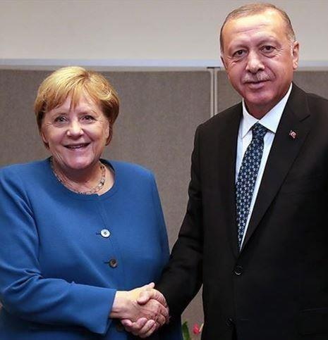

La logique du temps court, a-stratégique par essence, et plus encore l’incapacité manifeste ou le refus de nos gouvernants de la contrer en adoptant enfin une démarche stratégique donc anticipative, plongent l’Europe et bien sûr notre pays dans une cécité dramatique pour le futur de notre positionnement sur la carte du monde.
Tandis qu’à Paris, on se passionne pour les péripéties comico-tragiques de l’élection américaine (alors même que la politique étrangère de notre « Grand allié » ne changera qu’à la marge avec la nouvelle Administration), tandis que devient flagrante notre marginalisation de nombre de négociations et médiations internationales (Caucase du sud, Syrie, Liban, Libye, Yémen), bref, tandis que la France disparaît diplomatiquement par excès de suivisme et inconséquence, incapable de penser par elle-même le monde tel qu’il est, d’autres exploitent magistralement ce flottement prolongé. Et il est à craindre qu’il ne suffise pas pour rétablir notre rang et préserver nos intérêts, d’exposer une prétendue « doctrine en matière internationale » sur le site d’un réseau social ami, dans une conversation courtoise sur l’air du temps, en brodant avec talent sur des lieux communs (il faut coopérer, s’entendre, être plus libres, etc…) et des inflexions souhaitables de la marche du monde. Une « doctrine » de chien d’aveugle, réduite à une promenade au hasard dans le grand désordre mondial, et qui fantasme le positionnement de la France – étoile polaire définitive en termes de « valeurs » universelles (sans même voir que plus personne ne supporte nos leçons) – autour d’enjeux n’ayant quasiment rien à voir avec le concret de l’affrontement stratégique actuel et futur. Discourir sur la biodiversité, le changement climatique, la transformation numérique et la lutte contre les inégalités (sic), est certes important. Mais ce n’est pas le climat qui va nous rendre notre puissance enfuie et notre influence en miettes ! Qui peut le croire ?!
C’est surtout une diversion ahurissante par rapport à l’impératif de projeter son regard sur le planisphère, de définir ce que l’on veut y faire, région par région, pays par pays, d’en déduire des priorités, des lignes d’efforts thématiques et d’y affecter des moyens et des hommes. Cela rappelle de manière angoissante la réduction de notre politique étrangère à de l’action humanitaire depuis 2007 (avec B. Kouchner comme ministre) puis à de la « diplomatie économique » sous Laurent Fabius. Résultat : les désastres de nos interventions en Libye et en Syrie, un suivisme stratégique suicidaire, une décrédibilisation de la parole et de la signature françaises sans précédent. Il semble bien que la nouvelle martingale soit désormais « la diplomatie environnementale », mantra d’une action diplomatique dénaturée et d’une France en perdition stratégique. Au nom du réalisme bien sûr, alors que c’est au contraire notre irréalisme abyssal et notre dogmatisme moralisateur indécrottable qui nous privent de tout ressort en la matière. On est piégés comme des rats dans un universalisme béat et on refuse d’admettre le changement de paradigme international et la marginalisation patente de l’Occident, lui-même à la peine et divisé.
Pendant ce temps, B. Netanyahu se rend en Arabie Saoudite (ce qui n’est pas du tout une bonne nouvelle pour l’Iran), la France fait la leçon au Liban et s’étonne d’être rabrouée puis marginalisée là encore, la Russie et la Turquie s’entendent dans le Caucase du sud et renvoient le Groupe de Minsk à ses stériles palabres, Moscou s’installe au Soudan, l’Allemagne s’affirme en chouchou européen de Washington et se tait face aux provocations de la Turquie… à moins qu’elle ne redécouvre son atavique et inquiétante inclinaison pour l’Ottoman, etc.
Bref, les rapports de force se structurent à grande vitesse sans nous et même à nos dépens. Mais on n’en parle pas. Non par honte ou rage d’avoir été naïfs, dupes ou incapables de créativité diplomatique. Non. Juste parce qu’on a déjà renoncé à compter et que cela ne doit juste pas se voir. Et, tels certains responsables administratifs furieux de recevoir des informations démontant leurs partis pris, on les passe à la déchiqueteuse ! On les fait disparaître purement et simplement du champ du réel politique et médiatique. On ne veut surtout pas savoir que nous ne comptons plus ! Encore moins que les Français s’en aperçoivent.
Ainsi, la signature le 15 novembre, à l’initiative de Pékin, du RCEP (Regional Comprehensive Economic Partnership) par quinze pays d’Asie constitue une bascule stratégique colossale et inquiétante dont ni les médias ni les politiques français ne pipent mot. Voilà le plus grand accord de libre-échange du monde (30 % de la population mondiale et 30 % du PIB mondial) conclu entre la Chine et les dix membres de l’ASEAN (Brunei, la Birmanie, le Cambodge, l’Indonésie, le Laos, la Malaisie, les Philippines, Singapour, la Thaïlande et le Vietnam), auxquels s’ajoutent quatre autres puissantes économies de la région : le Japon, la Corée du Sud, la Nouvelle-Zélande et l’Australie.
Cette nouvelle zone commerciale se superpose en partie au TPP (Trans-Pacific Partnership) conclu en 2018 entre le Mexique, le Chili, le Pérou et sept pays déjà membres du RCEP : l’Australie, la Nouvelle-Zélande, Brunei, le Japon, la Malaisie, Singapour et le Vietnam. Ainsi se révèle et s’impose soudainement une contre manœuvre offensive magistrale de Pékin face à Washington (les États-Unis s’étaient follement retirés du projet TPP en 2017). Mais chut ! Où est l’UE là-dedans ? Nulle part ! Même l’accord commercial conclu en juin 2019 entre l’Union européenne et le Mercosur doit encore être ratifié par ses 27 parlements… Le Moyen-Orient et l’Afrique eux sont clairement vus comme des territoires ouverts à toutes les prédations de ce mastodonte commercial en formation. Seule la Grande Bretagne, libérée de l’UE grâce au Brexit, en profitera car elle vient habilement de sa rapprocher du Japon signataire du RCEP et du TPP…
Pendant ce temps, la France plonge dans une diplomatie décidément calamiteuse qui l’isole et la déconsidère partout. Elle vient d’abandonner le Franc CFA pour complaire au discours débilitant sur la repentance et les affres de la Françafrique. On expie. On ne sait pas quoi à vrai dire. Mais on s’y soumet et on laisse la place à Pékin, Washington, Moscou et même Ankara. Il ne sert à rien de geindre sur l’entrisme de ceux-là en Afrique quand on leur pave ainsi la voie. Il faudrait vraiment arrêter avec « le sanglot de l’homme blanc ». Il faut refondre notre diplomatie et aussi d’ailleurs nombre de nos diplomates au parcours brillant mais incapables de sortir d’un prêt-à-penser pavlovien (anti russe, anti iranien, anti syrien, anti turc même !) qui nous paralyse et nous expulse du jeu. Il faut enfin apprendre à répondre à l’offense ou à la provocation, et à ne pas juste se coucher dès que l’on aboie ou que l’on n’apprécie pas nos avancées souvent maladroites mais aussi parfois outrageuses. Tendre l’autre joue a ses limites. Mais évidemment pour être pris au sérieux, il ne faut pas toujours « calmer le jeu ». Il montrer les dents avec des « munitions », donc une vision et une volonté.
Partager cette page